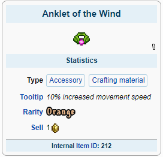
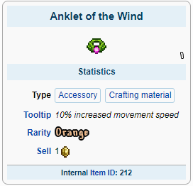
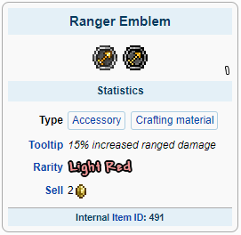
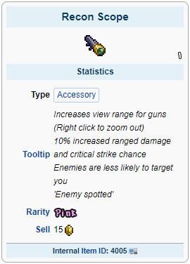

Armas Ranged são armas usadas em combate à distância. A característica definidora das armas de longo alcance é a necessidade de munição para que a arma funcione. As armas de longo alcance são categorizadas em arcos, repetidores, armas e lançadores.
A classe Ranged também é caracterizada pelo alto Dano por Segundo (DPS) e alta velocidade de movimento.
Rangers possuem a maior variedade de armas no inicio do jogo
O Boomstick com Meteor Shots, Molten Fury com flechas de Hellstone e Molten Armor possuem os melhores status disponíveis nesta fase do jogo:

Para acessórios é recomendado usar: Band of Regeneration, Shark Tooth Necklace, Anklet of the Wind e Frostspark Boots

 


Com esses equipamentos você estará pronto para derrotar qualquer chefe Pré-Hardmode!
A preparação para a luta com o Wall of Flesh utilize muniços que atravessem alvos
A Minishark e o Molten Fury serão suas melhores escolhas juntamente da Necro Armor:
Para acessórios a única alteração é a adição do Obsidian Shield:

Agora você está pronto para derrotar chefe do submundo e libertar poderes antigos em seu mundo!
Após derrotar o Wall of Flesh magias poderosas serão libertadas em seu mundo, novos biomas, inimigos, chefes e esquipamentos estarão disponíveis para uso.
Com tudo liberado a armadura Vortex, Phantasm e S.D.M.G. serão seus equipamentos:
No Hardmode vários acessórios poderosos estarão disponíveis, entre eles:
 


Agora você está pronto para derrotar qualquer coisa que entrar em seu caminho!
Melee MageSummoner